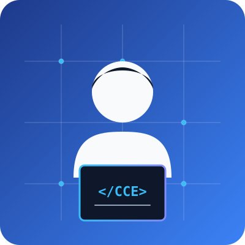

IoT & Embedded Systems
Designing sensor-driven hardware solutions such as my IoT-Based Weather Monitoring System, collecting environmental parameters in real time.
Welcome to my academic portfolio. I am a 2nd-year Computer and Communication Engineering student building practical projects at the intersection of IoT hardware systems and responsive, accessible web development.

Connecting communication principles, IoT sensor architectures, and modern web accessibility.
Designing sensor-driven hardware solutions such as my IoT-Based Weather Monitoring System, collecting environmental parameters in real time.
Developing responsive web applications like DHARM AI Decision, focusing on structured user workflows and clean frontend design.
Structuring web pages with native semantic HTML5 tags and WCAG standards for inclusive keyboard and screen-reader accessibility.
A look at my primary engineering and web projects:
An IoT engineering project combining ambient environmental sensors with microcontrollers to stream live weather data.
Project Details →A web development application providing an interactive interface for criteria evaluation and intelligent decision support.
Project Details →